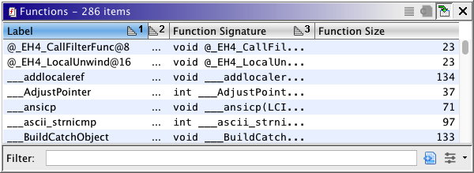
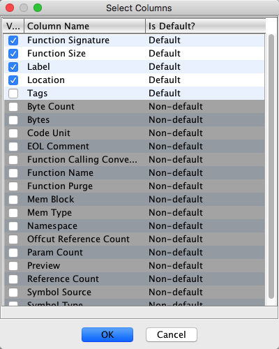
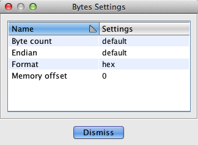

Sorting a table on a particular column is as easy as left-clicking that column. A
sorted column is denoted by an icon that shows the sort direction.
If you click a table column header and no sorting takes place, then that particular
table does not support sorting on columns.
When you click a column to sort the data, the default sort will be ascending. If you
click the column while it is already sorted, then the sort direction will be changed
and the table resorted.
To sort on multiple columns, press the Control key while left-clicking a table
column header. This will cause the clicked column to become the next sort column. As
an example, suppose you are sorted on column one, and then add a secondary
sort to column two, then the
data will be sorted first on column one, and then, when equal values are found for
that column, a secondary sort will take place on column two. You may sort on as many
columns as you wish. When a multiple column sort is in effect, a number will appear
next to each column's sort direction icon, which indicates that column's order in the
sorting process. Below is a picture of the Functions table sorted on
multiple columns:

With multiple sorted columns, you may change the direction of any individual
sort column by left-clicking that column.
 To remove a sort column from a multiple column sort, Ctrl-left-click that column.
This will even work when only one column is sorted, thus effectively disabling
sorting for the table. Disabling sorting can greatly increase the
table's performance when the number of rows is large
To remove a sort column from a multiple column sort, Ctrl-left-click that column.
This will even work when only one column is sorted, thus effectively disabling
sorting for the table. Disabling sorting can greatly increase the
table's performance when the number of rows is large
 It is possible to cancel some tables while they are loading or sorting their data.
If this happens, you can trigger a reload of the data by sorting on one of the
columns.
It is possible to cancel some tables while they are loading or sorting their data.
If this happens, you can trigger a reload of the data by sorting on one of the
columns.

The Select Columns dialog allows you to change the columns visible for a given
table. The dialog shows a table of columns that are available. At the very least, you
may turn off columns that you do not wish to see. Additionally, the table you are using
may support discoverable column types. If this is the case, they you will see
additional columns appear in the table. Discovered columns will be marked as
Non-default in the Is Default? table column.
Some columns allow you to alter the settings of the column, which will change how the
column displays its data. As an example, consider the Bytes Settings dialog below:

This dialog allows you to change various features of the bytes column, such as endianess
and the number of bytes that appear in the display.
Exports the current table to a comma-separated value (CSV) text file. The CSV file
will export the selected columns in the order displayed. The first row of ouput will
contain the table's column names.
This action uses the current
table selection when deciding what to export. If no row is selected, then no data is
exported. To select all rows, use the Select All action or press Ctrl-A on
the keyboard.